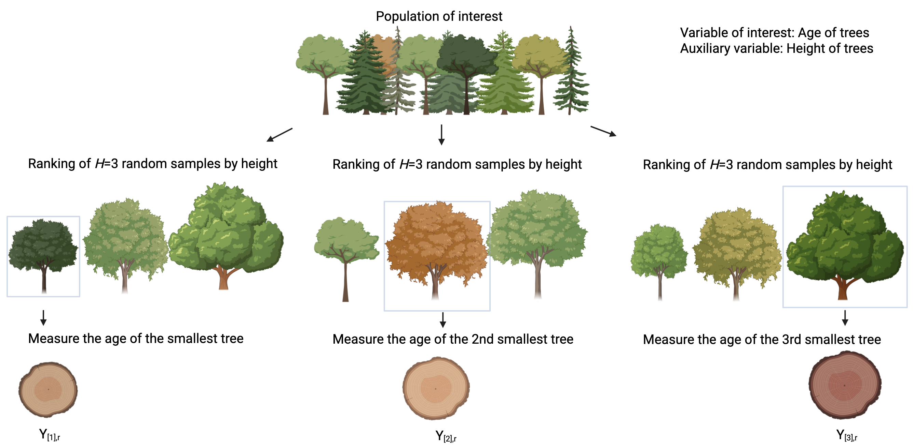
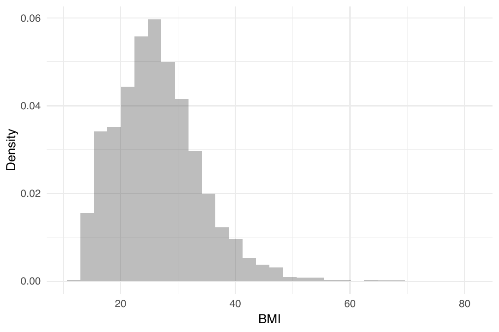
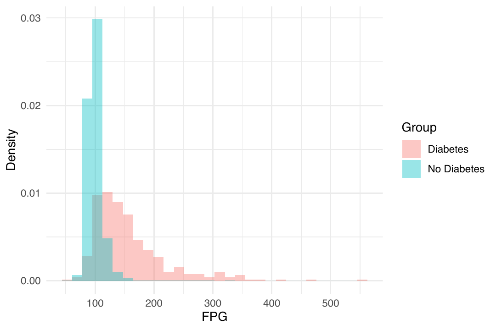

Ranked set sampling (RSS) is a stratified sampling method that improves efficiency over simple random sampling (SRS) by utilizing auxiliary information for ranking and stratification. While balanced RSS (BRSS) assumes equal allocation across strata, unbalanced RSS (URSS) allows unequal allocation, making it particularly effective for skewed distributions. The generalRSS package provides extensive tools for both BRSS and URSS, addressing limitations in existing RSS software that primarily focus on balanced designs. It supports RSS data generation, efficient sample allocation strategies for URSS, and statistical inference for both balanced and unbalanced designs. This paper presents the RSS methodology and demonstrates the utility of generalRSS through two medical data applications: a one-sample mean inference and a two-sample area under the curve (AUC) comparison using NHANES datasets. These applications illustrate the practical implementation of URSS and show how generalRSS facilitates ranked set sampling and inference in real-world data analysis.
Randomized experiments are fundamental to modern scientific discovery and typically depend on simple random sampling (SRS) to select units. While increasing the sample size can enhance the efficiency of such experiments, this approach may be impractical under resource constraints. Ranked set sampling (RSS), first introduced by (McIntyre 1952), offers a cost-effective alternative. RSS is a stratified sampling method that utilizes auxiliary ranking information to create strata (Stokes and Sager 1988). When each rank stratum includes an equal number of samples, it is called balanced RSS (BRSS). In contrast, unbalanced RSS (URSS) occurs when the number of samples differs across strata.
RSS has a rich history of research and development (Chen et al. 2004; Wolfe 2012, and references therein). Research has shown that BRSS consistently outperforms SRS with an equivalent sample size in estimation precision, as demonstrated by (Takahashi and Wakimoto 1968). Numerous studies have explored the efficiency of RSS estimators (Dell and Clutter 1972; David and Levine 1972; Stokes 1980). For skewed distributions, URSS estimators can achieve even greater efficiency than BRSS and SRS counterparts (Ahn et al. 2017; Ahn et al. 2024; Bocci et al. 2010; Chen and Bai 2000; Ozturk and Wolfe 2000). However, the performance of URSS depends heavily on the allocation of replicates among strata. Improper allocation can lead to inefficiencies, sometimes even worse than SRS. To address this, several studies (Bhoj and Chandra 2020; Chen and Bai 2000; McIntyre 1952; Wang et al. 2004) have proposed appropriate allocation rules, with Neyman allocation being the most widely used due to its optimal variance-minimizing properties when estimating the population mean. As a result, most of the existing literature on URSS has focused on this allocation strategy (Chen et al. 2004; Takahashi and Wakimoto 1968; Wang et al. 2017). Recently, (Ahn, Wang, and Lim 2022) defined a sufficient set of allocation schemes to ensure that URSS achieves greater efficiency in population mean estimation compared to BRSS. They also introduced two practical allocation adjustments to enhance the efficiency of URSS designs beyond that of BRSS.
Several R packages are available for RSS, including RSSampling (Sevinc et al. 2018), NSM3 (Schneider et al. 2024), RSStest (Gökpınar et al. 2023), and RankedSetSampling (Ozturk et al. 2021). RSSampling supports a wide range of RSS extensions, offering both sampling tools and statistical inference. NSM3 includes only classical RSS as a sampling procedure and provides critical value calculations for nonparametric inference. RSStest focuses on sampling and mean testing for RSS and MRSS and includes simulation tools under normal distributions. Finally, RankedSetSampling extends its scope to joint probability sampling (JPS) and offers mean and variance estimation for RSS. However, these packages are generally limited to balanced RSS designs, restricting their applicability for both sampling and inference in scenarios that require more flexibility.
BRSS designs are commonly implemented due to their simplicity and ease of implementation. However, in real-world survey studies, missing data often result in URSS scenarios, where BRSS methodologies become impractical. URSS offers a flexible alternative by allowing unequal allocation across strata, making it particularly effective for skewed distributions where unequal allocation can significantly improve estimation efficiency. Despite its advantages, implementing URSS has been challenging due to the lack of accessible tools in existing software packages.
R package generalRSS (Ahn and Moon 2025) was developed to address these limitations by fully supporting URSS while maintaining compatibility with BRSS. It provides parametric and nonparametric inference tools for population means, medians, AUCs, and proportions. Additionally, it offers functions for generating ranked set samples with specified allocations and optimizing allocation strategies to improve the efficiency of URSS designs. The flexibility of URSS allows users to tailor sampling designs to real-world constraints, making it particularly valuable when balanced designs are impractical. By treating BRSS as a special case of URSS with equal allocation across strata, generalRSS extends the applicability of RSS beyond BRSS methods. This versatility makes it a practical tool for a wide range of applications, including environmental or medical studies, where flexible sampling strategies are essential.
The rest of this paper is organized as follows. Section 2 provides an overview of ranked set sampling, with Section 2.1 covering BRSS and Section 2.2 discussing URSS, including their respective procedures. Section 3 describes the analysis approaches and functions available in generalRSS and compares them with existing R packages. Section 4 evaluates the performance of RSS relative to SRS in two inference problems using data from the US National Health and Nutrition Examination Survey (NHANES) (Pruim 2015; Centers for Disease Control and Prevention 2023). Finally, Section 5 summarizes the capabilities of generalRSS, its applications in inference problems, and future directions for inference methods and sampling designs.
In this section, we illustrate the sampling procedure of RSS by detailing its design and associated notations. An RSS dataset of size \(n\) can be represented as \[\begin{equation} \label{eqn:rss} \{(y_i, h_i, r_i), i=1,2,\cdots, n\}, \end{equation} \tag{1}\] where \(y_i\) denotes the \(i\)-th observation, \(h_i\) represents its rank among \(r_i\) independent observations, and \(r_i\) denotes the set size. Typically, RSS assumes a fixed set size, i.e., \(r_i=H\) for all \(i=1,2,\cdots,n\), and \(h_i\) takes values in \(\{1,\cdots, H\}\). The number of observations assigned to rank \(h\) is given by \(n_h=\sum_{i=1}^n I(h_i=h)\), where \(I(\cdot)\) denotes the indicator function. The total sample size of the RSS data is then given by \(n=\sum_{h=1}^H n_h\). These notations define the structure of RSS data and its implementation in generalRSS.
RSS data can also be represented using the notation \(Y_{[h],r}\) denoting
the \(r\)-th observation assigned to rank \(h\), with \(h=1,\cdots,H\) and
\(r=1,\cdots,n_h\). The RSS sampling process consists of the following
steps:
Step 1: Draw an i.i.d. sample of size \(H\) from the target population.
Step 2: Rank the \(H\) sampled units using an auxiliary variable without
measuring the variable of primary interest.
Step 3: Measure the unit ranked as the \(h\)-th smallest and discard the
remaining units.
Step 4: Repeat Steps 1-3 for each rank \(h\) up to \(H\).
These steps define one cycle of RSS, as illustrated in
Figure 1. In
each cycle, an i.i.d. random sample of size \(H\) is selected, ranked, and
one unit is measured per stratum, yielding a sample consisting of \(H\)
strata with one observed unit. In
generalRSS, we
adopt the infinite population framework, where independently repeating
the cycles (i.e., with replacement across cycles) yields multiple
observations within each stratum and ultimately forms the final ranked
set sample.

BRSS assumes equal allocation across strata, meaning that each rank \(h\) is assigned the same number of observations, i.e., \(n_h=m\) for every \(h=1,2,\cdots, H\). To obtain this, the RSS sampling cycle is repeated \(m\) times, resulting in a BRSS design with the sample allocation \((m, m, \cdots, m)\). For \(H=3\), followed by (Chen et al. 2004), a BRSS procedure with \(m\) cycles can be represented as: \[\begin{aligned} \textbf{Cycle r=1} \\ {\bf X}_{[1]11} \leq X_{[2]11} \leq X_{[3]11} &\implies Y_{[1],1} \\ X_{[1]21} \leq {\bf X}_{[2]21} \leq X_{[3]21} &\implies Y_{[2],1} \\ X_{[1]31} \leq X_{[2]31} \leq {\bf X}_{[3]31} &\implies Y_{[3],1} \\ \\ \textbf{Cycle r=2} \\ {\bf X}_{[1]12} \leq X_{[2]12} \leq X_{[3]12} &\implies Y_{[1],2} \\ X_{[1]22} \leq {\bf X}_{[2]22} \leq X_{[3]22} &\implies Y_{[2],2} \\ X_{[1]32} \leq X_{[2]32} \leq {\bf X}_{[3]32} &\implies Y_{[3],2} \\ \\ \cdots \cdots \cdots \cdots \cdots \cdots \cdots \cdots & \cdots \cdots \cdots \\ \textbf{Cycle r=m} \\ {\bf X}_{[1]1m} \leq X_{[2]1m} \leq X_{[3]1m} &\implies Y_{[1],m} \\ X_{[1]2m} \leq {\bf X}_{[2]2m} \leq X_{[3]2m} &\implies Y_{[2],m} \\ X_{[1]3m} \leq X_{[2]3m} \leq {\bf X}_{[3]3m} &\implies Y_{[3],m} \\ \end{aligned}\] where \(X_{[h]ir}\) denotes the \(h\)-th smallest auxiliary variable of the \(i\)-th SRS of size \(H\), selected in the \(r\)-th cycle. The resulting BRSS dataset is given by: \[\{Y_{[1],1},\cdots, Y_{[1],m}, Y_{[2],1}, \cdots, Y_{[2],m}, \cdots, Y_{[H],1},\cdots, Y_{[H],m}\}.\]
While BRSS assumes equal allocation across strata, real-world applications often involve scenarios where such a balance is impractical. For instance, skewed data, missing observations, or resource constraints can result in an unbalanced design. URSS allows for greater flexibility by permitting unequal allocations across strata, enabling more efficient sampling when strata exhibit higher variability or measurement difficulty. For example, if the population of interest has strata with differing levels of variability in measurements, allocating more samples to strata with higher variability can improve estimation efficiency, which BRSS cannot achieve.
Unlike BRSS, which completes a full cycle by selecting one sample for each stratum in every iteration, URSS follows an incomplete cycle structure, where strata exit the sampling process once they reach their allocated sample sizes \(n_h\). This means that different strata complete different numbers of iterations, leading to an unbalanced design. In Step 4 of the URSS procedure, Steps 1-3 are repeated only for strata that have not yet reached \(n_h\), ensuring that each stratum meets its predefined sample allocation.
For \(H=3\), without loss of generality, we may assume an allocation such that \(n_1 \leq n_2 \leq n_3\). Then, a URSS with sample allocation (\(n_1, n_2, n_3\)) is obtained as: \[\begin{aligned} \textbf{Cycle r=1,\cdots,} &\textbf{n_1} \\ {\bf X}_{[1]1r} \leq X_{[2]1r} \leq X_{[3]1r} &\implies Y_{[1],r} \\ X_{[1]2r} \leq {\bf X}_{[2]2r} \leq X_{[3]2r} &\implies Y_{[2],r} \\ X_{[1]3r} \leq X_{[2]3r} \leq {\bf X}_{[3]3r} &\implies Y_{[3],r} \\ \\ \textbf{Cycle r=n_1+1,\cdots,} & \textbf{n_2} \\ X_{[1]2r} \leq {\bf X}_{[2]2r} \leq X_{[3]2r} &\implies Y_{[2],r} \\ X_{[1]3r} \leq X_{[2]3r} \leq {\bf X}_{[3]3r} &\implies Y_{[3],r} \\ \\ \textbf{Cycle r=n_2+1,\cdots,} &\textbf{n_3} \\ X_{[1]3r} \leq X_{[2]3r} \leq {\bf X}_{[3]3r} &\implies Y_{[3],r} \\ \end{aligned}\]
For a general \(H\), the resulting URSS data can be represented as: \[\{Y_{[1],1},\cdots, Y_{[1],n_1}, Y_{[2],1}, \cdots, Y_{[2],n_2}, \cdots, Y_{[H],1},\cdots, Y_{[H],n_H}\}.\] In practice, missing values during the sampling process in BRSS often lead to a URSS design. This highlights the importance of methodologies that can accommodate both balanced and unbalanced designs seamlessly.
In Section 2, we introduced the RSS procedure, which involves selecting samples from a population and ranking them based on an auxiliary variable. In this section, we demonstrate how the generalRSS package facilitates the implementation of RSS methodologies, enabling efficient sampling and accurate inference of population parameters.
The generalRSS package, available on CRAN at https://cran.r-project.org/package=generalRSS, can be installed and loaded using the following commands:
install.packages("generalRSS")
library("generalRSS")The package incorporates some functions from R packages emplik (Zhou et al. 2024) and rootSolve (Soetaert and Soetaert 2023) for solving empirical likelihood problems. It is designed to address both sampling and inference problems in RSS with a focus on unbalanced designs. The package comprises two main components: (i) functions for sampling and sample allocation and (ii) functions for statistical inference.
The generalRSS package introduces two sampling functions to facilitate RSS procedures as well as a design function to calculate efficient sample allocations for URSS as summarized in Table 1.
| Function | Description |
|---|---|
rss.sampling |
Generate ranked set samples |
rss.simulation |
Generate example ranked set samples |
rss.prop.sampling |
Generate ranked set samples for proportions |
rss.prop.simulation |
Generate example ranked set samples for proportions |
rss.design |
Calculate efficient sample allocations for RSS |
The function rss.sampling generates ranked set samples directly from a
population dataset containing an auxiliary variable (\(X\)) and,
optionally, a variable of interest (\(Y\)). Internally, the function
repeatedly draws sets of size \(H\), ranks them by \(X\), and selects the
unit of rank \(h\) in each set, following the RSS procedure described in
Section 2. This
process is iterated across strata until the user-specified allocation
\((n_1,\ldots,n_H)\) is satisfied. When the auxiliary variable coincides
with the variable of interest (e.g., \(X=Y\)), perfect ranking is assumed.
If the variable of interest (\(Y\)) is not provided, the function selects
sample IDs based on \(X\), returning a data frame containing IDs and ranks
(\(r_i\)). If \(Y\) is provided, the function directly returns RSS data with
observation (\(y_i\)). For illustration, we use the iris dataset as the
population, treating Sepal.Length as the outcome variable (\(Y\)) and
Petal.Length as the auxiliary variable (\(X\)), with a set size \(H=3\)
and sample allocations \((n_1=2, n_2=2, n_3=2)\):
data("iris")
id = 1:nrow(iris)
rss.data = rss.sampling(ID = id, Y = NULL, X = iris$Petal.Length, H = 3,
+ nsamp = c(2,2,2))
head(rss.data)rank ID
1 1 80
2 1 34
3 2 91
4 2 121
5 3 106
6 3 122Since \(Y\) was not provided, the function returns only the selected IDs and ranks. The actual measurement of \(Y\) must be collected for these selected samples to complete the dataset. When \(Y\) is included in the population dataset, the function automatically extracts the corresponding values and returns a data frame containing ranks (\(r_i\)), IDs, and observations (\(y_i\)).
rss.data = rss.sampling(ID = id, Y = iris$Sepal.Length, X = iris$Petal.Length, H = 3,
nsamp = c(2,2,2))
head(rss.data) rank ID y
1 1 80 5.7
2 1 34 5.5
3 2 91 5.5
4 2 121 6.9
5 3 106 7.6
6 3 122 5.6The nsamp parameter specifies the number of cycles (\(n_h\)) for each
stratum. When \(n_h=m\) for all \(h\), the output is BRSS data. If \(n_h\)
varies across strata, the design corresponds to a URSS scheme.
The function rss.simulation generates ranked set samples by simulating
data from selected probability distributions, including normal, t, and
lognormal distributions, for illustrative purposes. Users can specify
the set size (\(H\)), the number of cycles (\(n_h\)), and ranking accuracy
(\(\rho\)) through the rho parameter, and a mean shift through delta,
enabling the simulation of populations with group-specific differences.
The key feature is that \(\rho\) directly controls the quality of ranking,
from perfect ranking \(\rho=1\) (i.e., no ranking errors) to increasingly
noisy ranking as \(\rho\) decreases.
The ranking accuracy in the simulated data is controlled through a
linear ranking model defined as \(X_i=Y_i+\epsilon_i\) for
\(i=1,2,\cdots,n\), where \(\epsilon_i\) represents independent normal
random variables with mean zero and variance chosen to achieve a
specific correlation \(\rho=Corr(X, Y)\). The rho parameter determines
the correlation between the outcome variable (\(Y\)) and the auxiliary
variable (\(X\)). The outcome variable \(Y\) is drawn from one of three
fixed shapes: \(N(0,1)\), \(t_{5}/\sqrt{5/3}\), or
\(\text{Lognormal}(0,\sqrt{0.481})-1.27\). Thus, in all cases \(Y\) has
approximately mean 0 and variance 1. This standardization ensures that
simulation results reflect distributional shape and \(\rho\), rather than
arbitrary parameters. The function is intended as an illustrative tool
and therefore does not allow user-specified distributional parameters
such as degrees of freedom or scale. The dist parameter determines the
underlying distribution shape. The function returns a data frame
containing ranks (\(r_i\)) and outcomes (\(y_i\)). For example, the
following code generates RSS data from a normal distribution with a mean
shift of \(\delta=0\) and a ranking quality of \(\rho=0.8\):
rss.simulation(H=3, nsamp=c(2,2,2), dist="normal", rho=0.8, delta=0)The functions rss.prop.sampling and rss.prop.simulation are the
sampling and simulation functions for proportions. The variable of
interest \((Y)\) is a binary variable of 0 and 1, corresponding to failure
and success, respectively. We assume the perfect ranking \((X=Y)\) for
proportions. For illustration, we use the iris dataset as the
population, defining both the outcome and the auxiliary variable (\(X=Y\))
as a binary indicator of whether Sepal.Length is less than 5.8:
data(iris)
id = 1:nrow(iris)
X = ifelse(iris$Sepal.Length < 5.8,0,1)
head(X)0 0 0 0 0 0Once the binary variable is defined, we apply rss.prop.sampling to
generate RSS data with a set size of \(H=3\) and sample allocations
\((n_1=2, n_2=2, n_3=2)\):
rss.prop.data = rss.prop.sampling(ID = id, X = X, H = 3, nsamp = c(2,2,2))
rss.prop.data rank ID
1 1 14
2 1 43
3 2 91
4 2 92
5 3 72
6 3 78The rss.prop.simulation function generates ranked set samples for
proportions by simulating data based on a true population proportion
\(p\). The p parameter represents the true proportion of successes and
serves as the success probability in a binomial distribution of \(Y\). For
example, the following code generates RSS data with a proportion of
\(p=0.6\):
rss.prop.data = rss.prop.simulation(H = 3, nsamp = c(2,2,2), p = 0.6)
rss.prop.data rank y
1 1 0
2 1 0
3 2 1
4 2 1
5 3 1
6 3 1The rss.design function evaluates the efficiency of a current URSS
design for mean or proportion estimation based on either an initial RSS
dataset or predefined sample allocation. If the design is inefficient
compared to SRS or BRSS, the function calculates improved sample
allocations to enhance efficiency. The function offers three allocations
for estimating a population mean: integer Neyman allocation (Wright
2012), local ratio consistent (LRC) allocation (Ahn, Wang, and Lim
2022), and adjusted Neyman (AN) allocation (Ahn, Wang, and Lim 2022).
Let \({\bf n}=(n_1,\cdots,n_H)\) with total \(n=\sum_{h=1}^H n_h\), and let
\(\sigma_h^2\) be the variance of the \(h\)-th rank stratum. The Neyman
allocation
\(\tilde{\bf{n}}=(\tilde{n}_1, \tilde{n}_2, \cdots, \tilde{n}_H)\)
minimizes the variance of the RSS mean estimator with
\[\tilde{n}_h=\frac{\sigma_{h}}{\sum_{l=1}^H \sigma_l}\cdot n,~~h=1,\cdots,H.\]
Since \(\tilde{n}_h\) is generally noninteger, the function rss.design
implements the integer allocation proposed by (Wright 2012), which
applies the method of equal proportions to the noninteger Neyman
allocation. This procedure allocates one unit to each stratum and then
distributes the remaining \((n-H)\) units according to priority values
\(\sigma_h/\sqrt{k(k+1)}\) \((k=1,2,\ldots)\), thereby yielding integer
Neyman allocations \((n_1,\ldots,n_H)\) that sum exactly to \(n\).
Ahn, Wang, and Lim (2022) proposed the allocation set \[{\mathcal N}=\left\{{\bf n}: 1 \le \frac{n_{h+1}}{n_h} \le \frac{\sigma_{h+1}^2}{\sigma_h^2},~~ h=1,\cdots, H-1\right\}\] and showed that this set provides a sufficient condition for efficiency. Whenever \({\bf n}\in\mathcal N\), the URSS estimator is guaranteed to be at least as efficient as the BRSS estimator, that is, \(\mathrm{Var}(\hat\mu_{URSS}) \le \mathrm{Var}(\hat\mu_{BRSS})\). The LRC allocation is obtained by an adjustment procedure that moves a given allocation into \(\mathcal N\) with minimal changes. Specifically, if the upper ratio condition \(n_{h+1}/n_h \le \sigma_{h+1}^2/\sigma_h^2\) is violated, one unit is added to the smaller stratum \(n_h\); if the lower condition \(n_{h+1}/n_h \ge 1\) is violated, one unit is added to the larger stratum \(n_{h+1}\). These updates are repeated until all local ratio conditions hold, producing an allocation that lies in \(\mathcal N\).
The AN allocation raises each stratum to at least its Neyman level, \[n_h^{AN}=\max(n_h^N, n_h),~~h=1,\cdots,H,\] so that \({\bf n}^{AN}\) is closer to Neyman and typically more efficient than the initial \(\bf n\) because it uses more samples and moves toward the Neyman allocation, even though it is not guaranteed to lie in \(\mathcal N\).
These methods ensure greater efficiency with minimal additional samples compared to the original URSS design. For example, we consider a simulated URSS dataset with an initial allocation of \((3,10,5)\). The function calculates optimized allocations as follows:
rss.data = rss.simulation(H = 3, nsamp = c(3,10,5), dist = "t", rho = 1, delta = 0)
rss.design(rss.data)$original.n
n1 n2 n3
3 10 5
$Integer.Neyman
n1 n2 n3
4 5 9
$Adj.Neyman
n1 n2 n3
4 10 9
$LRC.allocation
n1 n2 n3
6 10 10 In this example, the function first computes the integer Neyman allocation (\(n_1=4, n_2=5, n_3=9\)) and then recommends adding 1 sample to the first stratum and 4 samples to the third stratum, resulting in an adjusted Neyman allocation (\(n_1=4, n_2=10, n_3=9\)). Similarly, it computes the LRC allocation (\(n_1=6, n_2=10, n_3=10\)) by adding 3 samples to the first stratum and 5 samples to the third stratum. These adjusted allocations improve the efficiency of the original URSS design.
The rss.design function also computes the optimal Neyman allocation
for estimating a population proportion under perfect rankings (Chen et
al. 2006). Let \(p_h\) denote the success probability in the \(h\)-th
stratum. The variance of the URSS proportion estimator is minimized with
the Neyman allocation for proportions given by
\[{\tilde n}_h = n \frac{\sqrt{p_h(1-p_h)}}{\sum_{l=1}^H \sqrt{p_l(1-p_l)}},~~h=1,\cdots,H.\]
The following example compares an initial URSS allocation
\((n_1=10,n_2=15,n_3=20)\) to the computed Neyman allocation:
rss.prop.data = rss.prop.simulation(H = 3, nsamp = c(10,15,20), p = 0.5)
rss.design(rss.prop.data, prop = TRUE)$original.n
n1 n2 n3
10 15 20
$Neyman.proportion
n1 n2 n3
12.45017 19.36741 13.18242 Here, the computed Neyman allocation aligns more closely to the true Neyman allocation \((n_1=12.814, n_2=19.373, n_3=12.814)\), as suggested by (Chen et al. 2006), compared to the initial URSS design.
The generalRSS provides six statistical inference functions for estimating and testing the population means, medians, proportions, and AUCs using RSS data. These functions include both parametric and nonparametric methods, as summarized in Table 2.
| Function | Description |
|---|---|
rss.z.test |
RSS z-test for one-sample and two-sample problems |
rss.t.test |
RSS t-test for one-sample and two-sample problems |
rss.ELR.test |
RSS empirical likelihood ratio test for one-sample problems |
rss.sign.test |
RSS Sign test for one-sample problems |
rss.prop.test |
RSS proportion test for one-sample problems |
rss.AUC.test |
RSS empirical likelihood ratio test for two-sample problems |
The rss.z.test function provides point estimation, confidence
intervals (CIs), and hypothesis testing for the population mean using a
normal approximation for RSS data (Chen et al. 2004; Ahn et al. 2024).
It uses the asymptotic pivotal method to test \(H_0:\mu=\mu_0\), where the
test statistic is:
\[\begin{equation}
\frac{\widehat{\mu}_{\rm RSS}-\mu_{0}}{\widehat{\sigma}_{\widehat{\mu}_{\rm RSS}}} \overset{d}{\longrightarrow}N(0,1)
\label{eq:pivot}
\end{equation} \tag{2}\]
where
\(\widehat{\mu}_{\rm RSS}=\frac{1}{H}\sum_{h=1}^H \frac{1}{n_h}\sum_{r=1}^{n_h} Y_{[h],r}\),
\(\widehat{\sigma}^2_{\widehat{\mu}_{\rm RSS}}=\frac{1}{H^2}\sum_{h=1}^H\frac{1}{n_h(n_h-1)}\sum_{r=1}^{n_h}\left(Y_{[h],r}-\bar{Y}_{[h]}\right)^2\),
and \(\bar{Y}_{[h]}=\sum_{r=1}^{n_h} Y_{[h],r}/n_{h}\).
Similarly, the rss.t.test function performs mean inference using a
t-distribution approximation of the pivot statistics in
equation ((2)) (Ahn et al. 2014). It supports two methods
for estimating degrees of freedom: (i) sample applies a Welch-type
approximation replacing the in-stratum variances with their sample
estimates and (ii) naive uses \(n-H\). The choice is controlled by the
method parameter. In practice, we recommend naive for BRSS due to
its simplicity, except for small-sample skewed data where sample
performs better. For URSS, the sample-based estimator sample is
generally preferred. Both rss.z.test and rss.t.test functions handle
one-sample and two-sample problems using the same pivotal statistics but
differ in their approximation methods. The following example
demonstrates the rss.t.test function for a two-sample problem, testing
the hypothesis that the population mean difference is 0:
rss.data1 = rss.simulation(H = 3, nsamp = c(6,6,6), dist = "normal",
rho = 0.8, delta = 0)
rss.data2 = rss.simulation(H = 3, nsamp = c(6,8,10), dist = "normal",
rho = 0.8, delta = 0.5)
rss.t.test(data1 = rss.data1, data2 = rss.data2, alpha = 0.05,
alternative = "two.sided", mu0 = 0, method = "naive")$RSS_mean
[1] -0.05269583 0.59074771
$CI
[1] -0.9032096 -0.3836775
$t
[1] -5.023613
$df
[1] 36
$p.value
[1] 1.397776e-05The rss.ELR.test function provides a semi-parametric one-sample mean
test using an empirical likelihood ratio (ELR) test (Ahn et al. 2024).
This method offers a flexible alternative to traditional parametric
approaches, particularly when normality assumptions are not appropriate.
rss.ELR.test uses the empirical likelihood function which is defined
as:
\[\begin{equation}
\nonumber
L(\mu_0)=\sup \left\{\prod_{h=1}^H\prod_{r=1}^{n_h} p_{h,r}: \sum_{r=1}^{n_h} p_{h,r}=\frac{1}{H} ~~and~~ \sum_{r=1}^{n_h} p_{h,r} Y_{[h],r}=\mu_0 \right\},
\end{equation}\]
where \(p_{h,r}\) is a mass probability on \(Y_{[h],r}\). The test statistic
is the empirical likelihood ratio \(-2\log LR(\mu_0)\), which
asymptotically follows a chi-square distribution with one degree of
freedom. The following example demonstrates how to test the hypothesis
\(H_0: \mu=0\) using rss.ELR.test:
rss.ELR.test(data = rss.data1, alpha = 0.05, mu0 = 0)$RSS_mean
[1] -0.05269583
$CI
[1] -0.3153479 0.2204137
$`-2*log.LR`
[1] 0.1488371
$p.value
[1] 0.6996491The rss.sign.test function performs a nonparametric one-sample sign
test, providing median estimation, CIs, and hypothesis testing. For
BRSS, the function follows the method of (Hettmansperger 1995) whereas
it implements the approach of (Barabesi 2001) for URSS. Under the null
hypothesis \(H_0:M=M_0\), the test statistic for BRSS is:
\[\begin{equation}
\nonumber
n^{-1/2}\left(S_{{\rm RSS}}^{+}-\frac{n}{2}\right)
\overset{d}{\longrightarrow}N\left(0,~\frac{\eta^{2}}{4}\right),
\end{equation}\]
where \(S_{{\rm RSS}}^{+}=\sum_{i=1}^{n}{\rm I}\big( y_{i}-M_{0}>0\big)\),
\(\eta^{2}=1-\frac{4}{H}\sum_{h=1}^{H}\left\{ B\left(h,H-h+1,\frac{1}{2}\right)-\frac{1}{2}\right\} ^{2}\),
and \(B(h,s,q)\) is the cumulative distribution function of the beta
distribution with parameters \(h\) and \(s\) for \(0 \le q \le 1\). For URSS,
the test statistic follows:
\[\begin{equation}
\nonumber
\left(S_{{\rm RSS}}^{+}- \sum_{h=1}^H n_h (1-\beta_h) \right)
\overset{d}{\longrightarrow}N\left(0,\sum_{h=1}^H n_h \beta_h (1-\beta_h)\right),
\end{equation}\]
where \(\beta_h= B\left(h, H-h+1,\frac{1}{2}\right)\). Thus, the function
automatically applies the appropriate statistic depending on whether the
input design is balanced or unbalanced. The following example
demonstrates how to test whether the population median is 0 using
rss.sign.test:
rss.sign.test(data = rss.data1, alpha = 0.05, alternative = "two.sided", median0 = 0)$RSS_median
[1] -0.09226903
$sign
[1] 12
$CI
[1] -0.3059627 0.3796395
$z
[1] -0.7745967
$p.value
[1] 0.438578The rss.prop.test function offers proportion estimation, CIs, and
hypothesis testing for binary outcome variables (\(Y\)). The unbiased RSS
estimator for \(p\) is
\(\hat{p}=\frac{1}{H}\sum_{h=1}^H\frac{1}{n_h}\sum_{r=1}^{n_h}Y_{[h]r}\)
and its variance is
\(\text{Var}(\hat{p})=\frac{1}{H^2}\sum_{h=1}^{H}\frac{1}{n_h}\hat{p}(1-\hat{p})\).
Under perfect rankings, we can use a normal approximation for
proportions of RSS data (Chen et al. 2006; Ahn, Wang, Wang, et al.
2022):
\[\begin{equation}
\nonumber
\hat{p}-p \overset{d}{\longrightarrow}N\left(0,\frac{1}{H} \sum_{l=H-h+1}^H \binom{H}{l}p^l(1-p)^{H-l} \right).
\end{equation}\]
We extend the CI method proposed by (Zamanzade and Mahdizadeh 2020) for
BRSS to URSS by
\(\hat{p} \pm z_{1-\frac{\alpha}{2}}\sqrt{\frac{1}{H^2}\sum_{h=1}^H \frac{1}{n_h}\hat{p}_h(1-\hat{p}_h)}\)
where
\(\hat{p}_h=\sum_{l=H-h+1}^H \binom{H}{l}\hat{p}^l(1-\hat{p})^{H-l}\). The
following example illustrates how to use rss.prop.test to test the
null hypothesis \(H_0: p=0.2\) when the true population proportion is
\(p=0.6\).
rss.prop.data = rss.prop.simulation(H = 3, nsamp = c(12,9,6), p = 0.6)
rss.prop.test(data = rss.prop.data, alpha = 0.05, alternative = "two.sided", p0 = 0.2)$RSS_prop
[1] 0.4907407
$CI
[1] 0.3367646 0.6447169
$pstat
[1] 3.700841
$p.value
[1] 0.0002148859Additionally, the rss.AUC.test function conducts a semi-parametric ELR
test for comparing the AUC between two groups based on RSS data (Moon et
al. 2022). The AUC can be interpreted as the probability that a randomly
chosen observation from one group exceeds a randomly chosen observation
from the other group. This test is equivalent to the Mann-Whitney U
test, which assesses whether there is a significant difference in the
distributions between the two groups. It provides AUC estimation, CIs,
and hypothesis testing. For example, the rss.AUC.test can be used to
test the null hypothesis of no difference in AUC between two groups
(\(H_0: AUC=\delta_0=0.5\)):
rss.AUC.test(data1 = rss.data1, data2 = rss.data2, alpha = 0.05, delta0 = 0.5)$RSS_AUC
[1] 0.7123457
$CI
[1] 0.5586732 0.8156125
$`-2*log.LR`
[1] 6.63908
$p.value
[1] 0.009976544To our knowledge, the existing R packages that support RSS include RSSampling, NSM3, RSStest, and RankedSetSampling. While all these packages support RSS from population data using auxiliary variables for imperfect ranking - a standard feature in RSS methodologies - they vary in their scope and additional functionalities, with most focusing primarily on BRSS.
RSSampling provides sampling functions for both classical RSS and several modified RSS variants, such as Median RSS (MRSS), Percentile RSS (PRSS), Extreme RSS (ERSS), and Double RSS (DRSS). Additionally, it includes statistical inference methods for classical RSS, assuming balanced designs for both sampling and inference. NSM3 includes only the classical RSS procedure as a sampling tool, along with critical value calculations for a nonparametric test. RSStest primarily focuses on mean testing for RSS and MRSS and generating RSS data under a normal distribution. Lastly, RankedSetSampling incorporates Judgment Post-Stratified Sampling (JPS) and RSS, offering sampling, mean estimation, and variance calculation, but it is limited to balanced designs.
The generalRSS package distinguishes itself by fully supporting both BRSS and URSS, offering advanced tools for flexible sampling and efficient sample allocation in URSS. Additionally, it includes parametric and nonparametric inference procedures for population means, medians, proportions, and AUC, along with simulation tools under predefined distributions (Normal, t, and Log-normal), leveraging a linear ranking model to incorporate imperfect ranking. Unlike other packages, it provides methods to calculate efficient sample allocations for URSS, improving estimation efficiency for both continuous and binary data.
For BRSS, the methods implemented in generalRSS align with the standard approaches available in other packages and are therefore not explicitly compared here. Instead, the focus is on the unique features of generalRSS for URSS and its broader applicability. Table \[tab:comparison\] summarizes the capabilities of generalRSS compared to other existing packages.
In this section, we consider two inference problems comparing two sampling methods: RSS and SRS. The first problem involves a one-sample mean inference, and the second involves a two-sample AUC inference. The goal is to estimate the population mean and AUC and compare the efficiency of RSS and SRS in terms of the CI length of each estimator.
We demonstrate the RSS sampling and inference procedures by estimating
the mean body mass index (BMI) and testing the hypothesis
\(H_0: \mu=\mu_0\). BMI is a widely used indicator of body fat based on
weight and height, commonly employed to assess an individual’s health
status.
For this analysis, we use the US National Health and Nutrition
Examination Survey (NHANES) dataset, available in the R package
NHANES (Pruim 2015).
NHANES provides comprehensive health-related measurements collected from
individuals across the United States. In this study, we focus on two key
variables in the NHANES dataset: BMI as the outcome of interest (\(Y\))
and weight as the auxiliary variable (\(X\)) in RSS.
The NHANES dataset originally contains BMI records for approximately 10,000 subjects. However, due to duplicated entries, only the first observation per subject is retained, resulting in a final dataset of 6,779 unique individuals. We treat this pre-processed dataset as the underlying population for our analysis.
We note that NHANES data are used strictly for illustrative purposes to demonstrate the functionality and flexibility of the generalRSS package, rather than to produce population-level estimates. The NHANES dataset is derived from a stratified, multi-stage, unequal probability cluster sampling design. Consequently, the results presented should not be interpreted as valid inferences about the U.S. population without applying appropriate survey-weighted methods and design-based variance estimation techniques.
We load the NHANES dataset from the R package NHANES as follows:
library("NHANES")The duplicated data are pre-processed by running:
library(dplyr)
dat = NHANES |> distinct(ID, .keep_all = TRUE) |> select(ID, BMI, Weight)
mu0 = mean(dat$BMI,na.rm=T)
mu0[1] 26.48768cor(na.omit(cbind(dat$BMI, dat$Weight))) BMI Weight
BMI 1.0000000 0.9027414
Weight 0.9027414 1.0000000The true mean of BMI is 26.488 and the correlation between the
auxiliary variable Weight and the outcome variable BMI is 0.903,
indicating high-ranking quality. The histogram of the BMI in
Figure 2
shows a skewed distribution, suggesting that URSS may be more efficient
than SRS.

Using the NHANES data as the underlying population, we start with a BRSS
design, using a set size of \(H=3\) and a total sample size of \(n=30\),
resulting in a balanced allocation of \(n_h=10\) for each stratum
(\(h=1, 2, 3\)). However, missing data in the outcome variable can lead to
a URSS design. In such cases, we apply rss.design to evaluate the
efficiency of the initial sample allocation. If the allocation is deemed
inefficient, adjusted allocations are calculated, and additional
sampling is performed to obtain the final RSS data. Inference methods
are then applied to the final RSS data.
In practice, we first generate BRSS data using the auxiliary variable
(Weight) to rank and select samples without measuring BMI. The outcome
variable is then measured for the selected samples as described in
Section 2.
org.nsamp = c(10,10,10)
rss.dat = rss.sampling(ID=dat$ID, X=dat$Weight, H=3, nsamp=org.nsamp)
ind<- match(rss.dat$ID,dat$ID)
rss.dat$y = dat$BMI[ind]
head(rss.dat) rank ID y
1 1 64759 24.80
2 1 58179 16.93
3 1 54775 18.84
4 1 63972 19.90
5 1 52695 28.04
6 1 64076 NAHere, we observe missing values in the outcome y, resulting in a URSS
sample allocation \((n_1=9, n_2=10, n_3=10)\) and total sample size \(n=29\)
as shown below:
rss.dat = na.omit(rss.dat)
org.nsamp = table(rss.dat$rank)
print(org.nsamp) 1 2 3
9 10 10 Using this original URSS data, we test the null hypothesis
\(H_0:\mu=\mu_0\) using a t-test with rss.t.test and the sample
method.
org.t = rss.t.test(data1 = rss.dat,mu0 = mu0, method = "sample")
print(org.t)$RSS_mean
[1] 27.02993
$CI
[1] 24.90905 29.15080
$t
[1] 0.5323651
$df
[1] 20.57505
$p.value
[1] 0.6001757diff(org.t$CI) [1] 4.241756In Figure 2, the outcome variable shows a skewed
distribution and URSS may offer improved efficiency, but the current
sample allocation org.nsamp (\(n_1=9, n_2=10, n_3=10\)) is not
guaranteed to be optimal. To address this, we use rss.design to
evaluate sample efficiency and adjust allocations accordingly:
alloc = RSS.design(data = rss.dat[,c("rank","y")])
add.samp = alloc$Adj.Neyman - org.nsamp
add.samp1 2 3
0 0 3We adopt the adjusted Neyman allocation Adj.Neyman and identify the
need for three additional samples in the third stratum. From the
remaining population, except for the pre-selected samples, we sample
again using the auxiliary variable without measuring the outcome. Then,
we measure the outcome for the three newly selected samples:
add.dat = rss.sampling(ID=dat$ID, X=dat$Weight, H=3, nsamp=add.samp)
add.ind = match(add.dat$ID, dat$ID)
add.dat$y = dat$BMI[add.ind]By merging the additional data with the original data, we obtain efficient URSS data.
update.dat = rbind(rss.dat, add.dat)
table(update.dat$rank) 1 2 3
9 10 13Using this updated RSS data, we reapply the t-test with rss.t.test:
update.t = rss.t.test(data1 = update.dat, mu0 = mu0, method = "sample")
print(update.t)$RSS_mean
[1] 26.59152
$CI
[1] 24.59261 28.59042
$t
[1] 0.1067613
$df
[1] 26.07755
$p.value
[1] 0.9157954diff(update.t$CI) [1] 3.997811When we compare the results before and after adding extra samples, we observe that the CI length decreases from 4.242 to 3.998 for RSS data.
We repeated the following procedure for 500 replicates to compare the
performance of the original URSS, updated RSS, and SRS. For a fair
comparison, SRS was assigned the same total sample size as the updated
RSS. To generate the original URSS in each replicate, we introduced 10%
missing values into a BRSS dataset with \(n_h=m = 10\), resulting in a
URSS design. For the updated allocations, we selected the sample
allocation provided by the rss.design function that required the
smallest number of additional samples.
Table 3
presents the average sample size, coverage probability, and 95% CI over
500 replicates. Compared to the original URSS, the updated RSS achieves
a significant reduction in CI length while maintaining a coverage
probability close to the nominal 95% level. Additionally, compared to
SRS, the updated RSS demonstrates superior performance, achieving both a
higher coverage probability and a shorter CI length. These findings
underscore the efficiency of updated RSS in handling missing data and
enhancing estimation precision.
| Sampling | Sample size | Coverage Probability | CI Length |
|---|---|---|---|
| Original URSS | 25.72 | 0.948 | 4.981 |
| Updated RSS | 27.15 | 0.950 | 4.686 |
| SRS | 27.15 | 0.942 | 5.924 |
We demonstrate the RSS sampling and inference procedures by comparing fasting plasma glucose (FPG) levels between two groups with and without diabetes through the estimation of the AUC (\(\delta\)). The FPG test determines whether blood sugar levels stay elevated after an extended fasting period, signaling potential issues with sugar metabolism (American Diabetes Association 2022). However, the FPG test may sometimes be inconvenient because it requires a fasting period of at least 8 hours. The HbA1c test, also called glycohemoglobin or hemoglobin A1c, is another valuable tool for diagnosing diabetes. It provides an average of blood sugar levels over the past 2-3 months and does not require any prior preparation, unlike the FPG test (American Diabetes Association 2022). In this application, we set the FPG as the outcome variable (\(Y\)) and glycohemoglobin as the auxiliary variable (\(X\)).
AUC represents the probability that a randomly selected individual from the diabetes group has a higher FPG than a randomly selected individual from the non-diabetes group. For example, under \(H_0: \delta=0.5\), the two distributions are identical, indicating no discriminatory ability between the groups based on FPG.
We analyze the NHANES dataset collected between 2021 and 2023, focusing
on 3,540 subjects with data on FPG (LBXGLU), glycohemoglobin
(LBXGH), and diabetes-related information (DIQ010) (Centers for
Disease Control and Prevention 2023). These variables are provided in
the supplementary file diabetesAUC.RData. We first separate the data
into two groups by diabetes status.
load("diabetesAUC.RData") # load data
grp1 = data |> filter(DIQ010 == 0) # non-diabetic
grp2 = data |> filter(DIQ010 == 1) # diabetic
mean(grp1$LBXGLU)[1] 100.4777mean(grp2$LBXGLU)[1] 156.5644cor(data$LBXGH, data$LBXGLU)[1] 0.813826The true mean FPG levels are 100.478 for non-diabetes and 156.564 for diabetes populations, respectively. The histograms of FPG by diabetes status in Figure 3 highlight that the FPG distribution in the diabetes group is shifted towards higher values compared to the non-diabetes group. Also, the correlation between the outcome and auxiliary variables (i.e., FPG and glycohemoglobin) is 0.814, confirming strong ranking quality.

Using R package pROC, we calculate the true AUC:
library(pROC)
delta0 = roc(data$DIQ010, data$LBXGLU, direction = c("<"), levels = c(0,1))$auc
delta0Area under the curve: 0.8861In this section, we assume that the FPG level (\(Y\)) of the population is given, compared to Section 4.1. We use a set size of \(H=3\) and a total sample size of \(n=30\), a balanced allocation of \(n_h=10\) for each stratum (\(h=1, 2, 3\)). Samples are ranked by the glycohemoglobin (\(X\)) and measure the outcome (\(Y\)) simultaneously for each group with a BRSS design:
org.nsamp1 = c(10,10,10)
org.nsamp2 = c(10,10,10)
H = length(org.nsamp1)
brss.grp1 = rss.sampling(ID = grp1$SEQN, X = grp1$LBXGH, Y = grp1$LBXGLU, H = H,
nsamp=org.nsamp1)
brss.grp2 = rss.sampling(ID = grp2$SEQN, X = grp2$LBXGH, Y = grp2$LBXGLU, H = H,
nsamp = org.nsamp2)We then apply rss.AUC.test to these two RSS datasets to test the null
hypothesis \(H_0: AUC=0.8861\).
brss.auc = rss.AUC.test(data1 = brss.grp1, data2 = brss.grp2, alpha = 0.05,
delta0 = delta0)
brss.auc$RSS_AUC
[1] 0.8477778
$CI
[1] 0.7046560 0.9178329
$`-2*log.LR`
[1] 0.818453
$p.value
[1] 0.3656329rss.AUC.test returns the RSS AUC point estimate, CI, the ELR test
statistics, and the \(p\) value for the test.
We can improve the efficiency of RSS sampling using URSS design compared to BRSS. If AUC is expected to be high, the smallest rank group in the non-diabetic group and the largest rank group in the diabetic group provide limited information in AUC inference because the FPG levels are expected to be too small and too large, respectively. Therefore, a more precise inference is possible if we could have a larger number of samples from the largest rank group in the non-diabetic group and a larger number of samples from the smallest rank group in the diabetes group. To illustrate this, we set \((n_1=5, n_2=10, n_3=15)\) for the non-diabetic group and \((n_1=15, n_2=10, n_3=5)\) for the diabetic group. The URSS sampling and AUC inference can be done:
org.nsamp1 = c(5,10,15)
org.nsamp2 = c(15,10,5)
H = length(org.nsamp1)
urss.grp1 = rss.sampling(ID = grp1$SEQN, X = grp1$LBXGH, Y = grp1$LBXGLU, H = H,
nsamp=org.nsamp1)
urss.grp2 = rss.sampling(ID = grp2$SEQN, X = grp2$LBXGH, Y = grp2$LBXGLU, H = H,
nsamp=org.nsamp2)
urss.auc = rss.AUC.test(data1 = urss.grp1, data2 = urss.grp2, alpha = 0.05,
delta0 = delta0)
urss.auc$RSS_AUC
[1] 0.8977778
$CI
[1] 0.7933407 0.9450542
$`-2*log.LR`
[1] 0.09911326
$p.value
[1] 0.7528964Using URSS, we estimate AUC as 0.898 with a CI length of 0.152, which is shorter compared to the CI length of 0.213 from BRSS data.
diff(brss.auc$CI)[1] 0.2131769diff(urss.auc$CI)[1] 0.1517134We repeat the following procedure for 500 different samples and compare URSS and BRSS. We also compare the efficiency with SRS data. We sample two SRS data with the same total sample size of \(n=30\) from the non-diabetes and the diabetes group, respectively, and estimate the AUC and its CI, followed by (Moon et al. 2022). Table 4 shows the average coverage probability and the length of 95% CI. URSS yields the highest coverage probability with CI length comparable to BRSS and shorter than SRS.
| Sampling | Coverage Probability | CI Length |
|---|---|---|
| URSS | 0.944 | 0.175 |
| BRSS | 0.926 | 0.175 |
| SRS | 0.916 | 0.181 |
The generalRSS package provides a comprehensive framework for ranked set sampling (RSS), addressing challenges such as missing data, skewed population distributions, and binary data. Unlike traditional tools, it supports both balanced (BRSS) and unbalanced (URSS) designs, offering functions for flexible sampling, efficient sample allocation, and statistical inference for means, medians, proportions, and AUCs.
This paper compares
generalRSS with
existing RSS packages
(Table \[tab:comparison\]) and demonstrates its application through
real-world medical case studies. In the one-sample problem, an initial
BRSS design became unbalanced due to missing data. By applying the
rss.design function, we optimized the URSS allocation, reducing CI
lengths while maintaining coverage probability. In the two-sample
problem, URSS was applied to AUC inference by designing the sample
allocations based on the distributions of the two groups. Simulations
confirmed that URSS improved estimation efficiency over both SRS and
BRSS.
These findings highlight the advantages of unbalanced designs in RSS-based studies, particularly when missing data or skewed distributions limit traditional methods. The case studies illustrate the effectiveness of generalRSS in applied research and its broader applicability to inference problems beyond medical studies. Future work will focus on expanding inferential methods and refining sampling strategies to further enhance generalRSS as a tool for RSS-based analysis.
The results in this paper were obtained using R 4.3.1 with the following packages: generalRSS 0.2.0, MASS 7.3-60, dplyr 1.1.4, ggplot2 3.5.1, pROC 1.18.5, tidyverse 2.0.0, haven 2.5.4, rootSolve 1.8.2.4, emplik 1.3-1, and NHANES 2.1.0.
All computations were carried out on a 64-bit Windows 11 Pro system (version 24H2) with a 13th Gen Intel(R) Core(TM) i7-13700 2.10GHz processor and 32 GB of RAM.
This research was supported by the Learning & Academic research institution for Master’s·PhD students, and Postdocs (LAMP) Program of the National Research Foundation of Korea (NRF) grant funded by the Ministry of Education (No. RS-2023-00285390) and Basic Science Research Program through the National Research Foundation of Korea (NRF) grant funded by the Ministry of Education (NRF-2021R1A6A1A10044950).
Supplementary materials are available in addition to this article. It can be downloaded at RJ-2026-017.zip
generalRSS, RSSampling, NSM3, RSStest, RankedSetSampling, emplik, rootSolve, NHANES, pROC, MASS, dplyr, ggplot2, tidyverse, haven
ChemPhys, Databases, DifferentialEquations, Distributions, Econometrics, Environmetrics, MixedModels, ModelDeployment, NetworkAnalysis, NumericalMathematics, Phylogenetics, Psychometrics, Robust, Spatial, Survival, TeachingStatistics
This article is converted from a Legacy LaTeX article using the texor package. The pdf version is the official version. To report a problem with the html, refer to CONTRIBUTE on the R Journal homepage.
Text and figures are licensed under Creative Commons Attribution CC BY 4.0. The figures that have been reused from other sources don't fall under this license and can be recognized by a note in their caption: "Figure from ...".
For attribution, please cite this work as
Moon & Ahn, "generalRSS: Sampling and Inference for Balanced and Unbalanced Ranked Set Sampling", The R Journal, 2026
BibTeX citation
@article{RJ-2026-017,
author = {Moon, Chul and Ahn, Soohyun},
title = {generalRSS: Sampling and Inference for Balanced and Unbalanced Ranked Set Sampling},
journal = {The R Journal},
year = {2026},
note = {https://doi.org/10.32614/RJ-2026-017},
doi = {10.32614/RJ-2026-017},
volume = {18},
issue = {1},
issn = {2073-4859},
pages = {278-300}
}